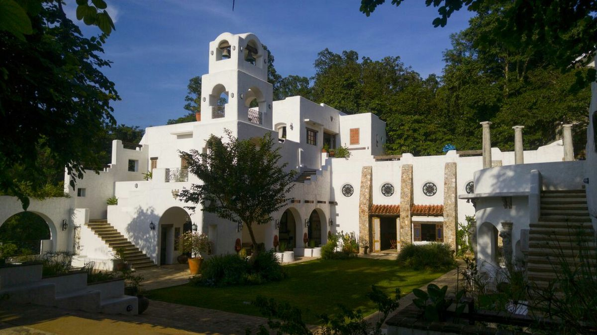
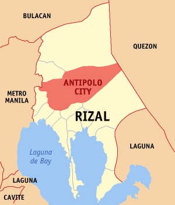
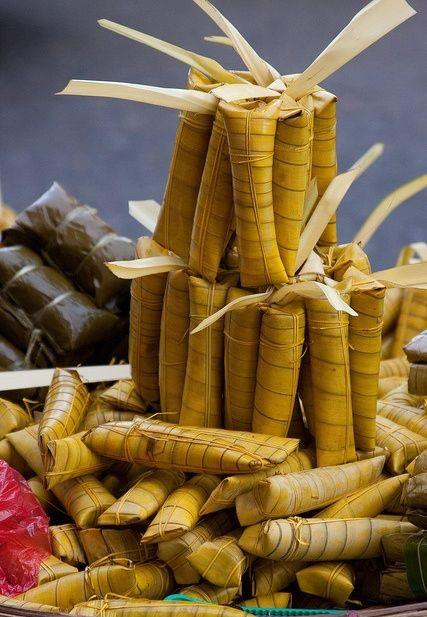
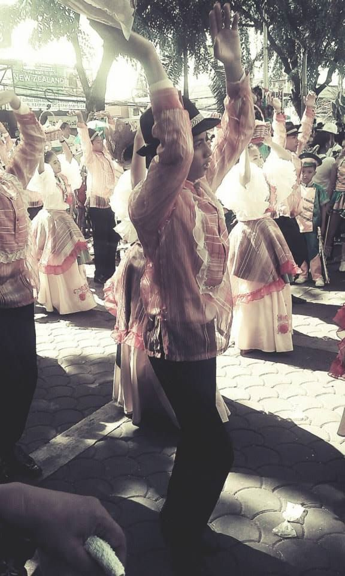
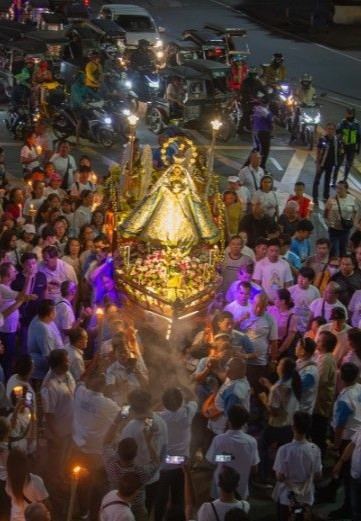
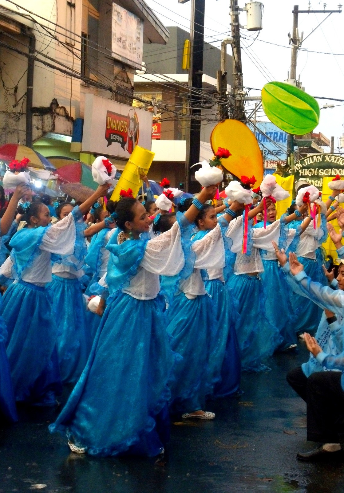
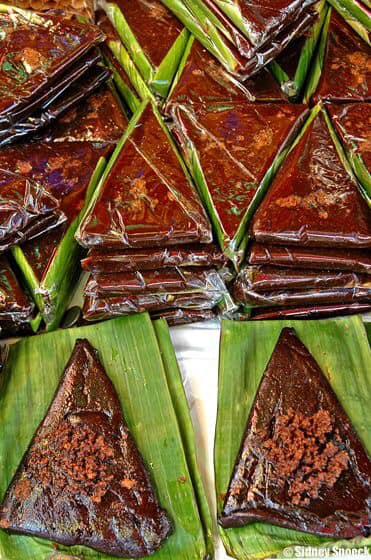

CRADLE OF PHILIPPINE ART


Pinto Art Museum in Antipolo City
PILGRIMAGE CITY
Experience the beauty of Antipolo City for its cool mountain breeze and breathtaking views overlooking Metro Manila.

Municipality in Rizal Province
With a total population of 924,888 as of 2022, Antipolo City has an average population density of 2,214.12/km2 (5,734.5/sq mi). Roman Catholics, Tagalog speakers, and Filipino/English speakers make up the majority of Antipoleos. The city’s literacy rate was 96.5 percent as per the 2000 Census.
Antipolo’s terrain may be characterized as being mostly hilly and mountainous, with the majority of the hills being located in the west and the majority of the mountains being located in the east as a part of the Sierra Madre Mountain Range. The northern and southern boundaries, as well as the center of the city, all have well-watered valleys. The western part of the study area has plateaus that are more than 200 meters above sea level, including the Poblacion and some of the Brgy. San Juan and Cupang.
View in Google Maps >>>
The city’s communities continue to practice various customs, rituals, and local arts that reflect its history, values, and close-knit way of life, offering insight into the unique identity and cultural continuity of the area. From age-old customs to vibrant local practices, the city invites visitors to experience the warmth, creativity, and unique identity of its people.





Annual Festival in Angono, Rizal
Every year, during the last week of November, residents of Angono, Rizal (the art capital of the Philippines) parade giant puppets or higantes made out of papier-mache to celebrate the Higantes Festival. The streets of Angono come alive with a sea of giants dressed in vibrant colors, some as tall as 15 feet, and depicted as different personas, animals, or objects that are significant to them. The festival is usually scheduled on the Sunday before their town's feast on November 23. And while the festival has been celebrated for centuries, its true origin and purpose remain somewhat a mystery.
According to Angono's official website, a study conducted by Far Eastern University professor, James Owen Saguinsin, revealed that the giant puppet paraded during the festival actually depicting a tall katiwala or hacienda caretaker named Karias Tangkad, whom the people wanted to take revenge (higanti) on. Moreover, the study showed that the Higantes Festival only began after World War II when Filipino artist Carlos “Botong” Francisco asked Artemio Tajan, the first higantes maker, to create the giant papier-mache puppet to make Angono's fiesta celebration livelier and more festive.
View more of the festivals and traditions >>>

The municipality is famous for its vibrant art scene, historical landmarks, and scenic attractions that reflect the heritage and talent of its people. Visitors can explore remarkable sites such as the Angono-Binangonan Petroglyphs, the oldest known artworks in the country, as well as various art galleries, museums, and cultural landmarks. Angono offers tourists a unique and inspiring destination that celebrates both Filipino culture and creativity.


Arts in Angono Rizal
Doña Aurora Street in Barangay Poblacion Itaas is home to the late Botong Francisco. As tribute to this national artist, murals casts in cement were installed on the walls that lined the street. These concrete murals were based on the actual paintings of the Botong Francisco.
From the barrio fiestas and to scenes that form part of the cultural and religious life of the people of country and hometown. Walking further up the narrow street, a mural he created to honor Maestro Lucio San Pedro. The lyrics and notes one of his famous composition Sa Ugoy ng Duyan (On the Swaying of the Hammock) are inscribed on a wall. San Pedro is known for his “creative nationalism” with Filipino folk songs. He composed “tone poems” and lullabies that extol rural life.
View more tourist attractions >>>
Was once a barrio of Binangonan; created as a pueblo in 1766 and became an independent Municipality in 1935 by the virtue of Executive Order 158, signed by then President Manuel L. Quezon, effective on January 1, 1935. Was believed to be the cradle of mythical beings such as nuno, sirena that underscore the rich history and culture of the town.

Then, was aptly named as “Angono”, said to be linked to “Ang Nuno”, a small-long bearded man living in the old balete tree situated in the town’s poblacion. It is home to the Angono Petroglyphs, the oldest known work of art in the philippines. The birthplace of two great Filipino National Artists, Carlos “Botong” V. Francisco and Maestro Lucio D. San Pedro, National Artists for Visual Arts and Music, respectively.
View more of the history of Angono Rizal >>>
The Beauty of The Rizal Province
@2026 Darrel Sining. All rights reserved.
TOWNS
About